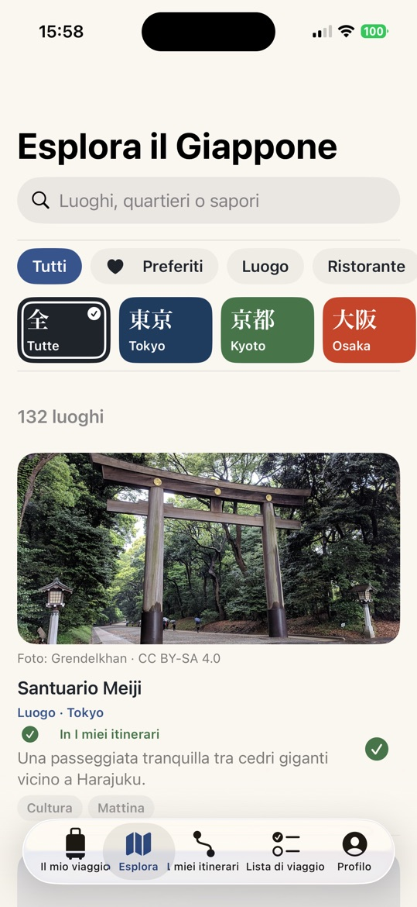
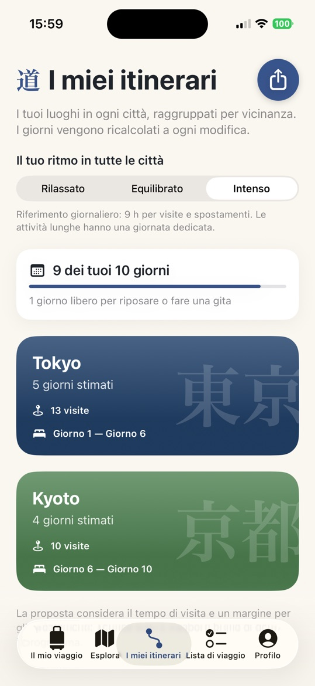
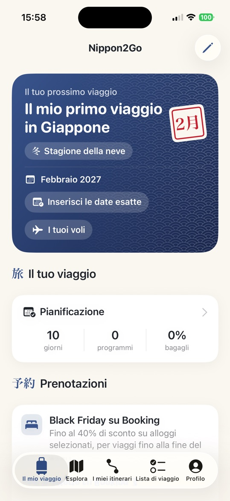
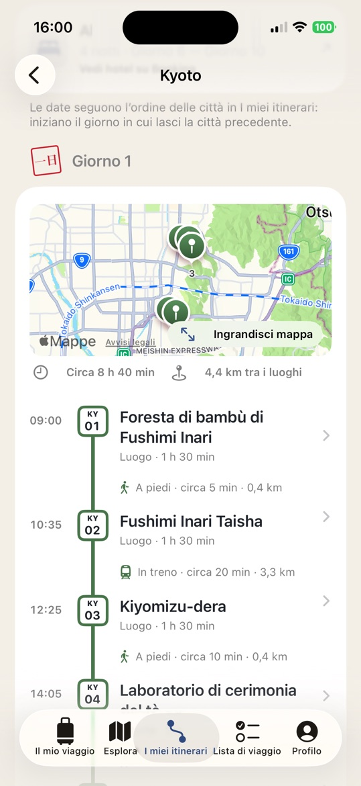
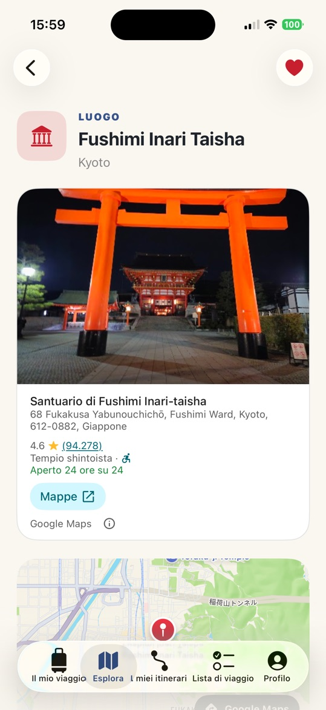
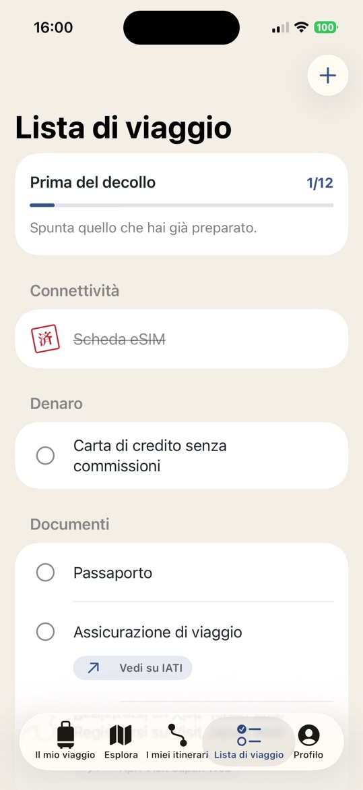
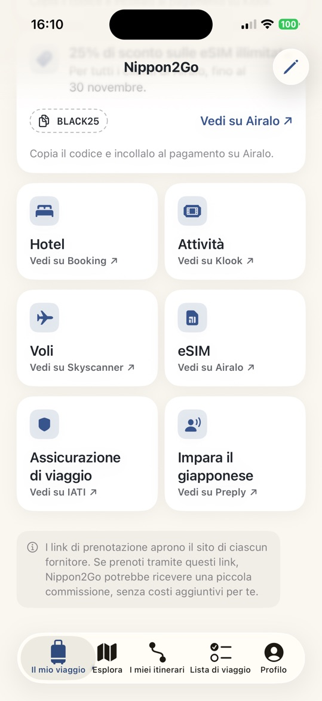

Esplora
Oltre 125 luoghi selezionati
Templi, punti panoramici, quartieri, ristoranti, hotel ed esperienze a Tokyo, Kyoto, Osaka, Nara, Kamakura, Yokohama e Hiroshima, con foto e filtri per tipo e per città.

Scopri i posti migliori, trasformali in itinerari realistici giorno per giorno e arriva con tutto pronto, dal passaporto al JR Pass.
iPhone (iOS 17+) · Android

Dalla prima idea all’ultimo giorno in Giappone.
Esplora
Templi, punti panoramici, quartieri, ristoranti, hotel ed esperienze a Tokyo, Kyoto, Osaka, Nara, Kamakura, Yokohama e Hiroshima, con foto e filtri per tipo e per città.

I miei itinerari
Aggiungi luoghi al tuo itinerario e Nippon2Go raggruppa le tappe vicine in giorni per ogni città, con orari, distanze e se conviene andare a piedi o prendere il treno.

Luoghi
Valutazione di Google, orari di apertura e indirizzo, una mappa di Apple e indicazioni con Google Maps. Le attrazioni con biglietto d’ingresso hanno un link diretto ai loro biglietti.

Lista di viaggio
Passaporto, assicurazione di viaggio, eSIM, adattatore per le prese, JR Pass… più le voci che aggiungi tu, timbrate con un sigillo 済 man mano che le spunti.

Prenotazioni
Hotel su Booking.com con la tua città e le tue date già inserite, attività e biglietti su Klook, un’eSIM per il Giappone di Airalo, voli su Skyscanner, l’assicurazione di viaggio di IATI e lezioni di giapponese con un insegnante su Preply.

Viaggi condivisi Presto disponibile
Invita chi viaggia con te con un link o un codice: ognuno vede e modifica lo stesso viaggio sul proprio telefono, iPhone o Android. Saprai chi ha aggiunto ogni piano e cosa è cambiato, e ognuno conserva i suoi preferiti, I miei itinerari e la sua Lista di viaggio. L’account serve solo per condividere.
Un’agenda modificabile per ogni giorno, che puoi aggiungere al Calendario del tuo iPhone con l’ora del Giappone.
Non serve un account. I tuoi viaggi restano sul tuo telefono. Disponibile in 7 lingue.
Risposte rapide ai dubbi più comuni.
No. Puoi usare tutta l’app senza accedere. Se vuoi, puoi accedere con Apple o Google in Profilo → Account. In ogni caso, i tuoi viaggi non vengono caricati da nessuna parte.
Solo sul tuo telefono. I viaggi non vengono sincronizzati tra dispositivi e, se elimini l’app, elimini anche i tuoi viaggi.
Il tuo viaggio, i tuoi itinerari e la lista di viaggio sono salvati sul tuo telefono. Le mappe, le foto dei luoghi, i dettagli dei luoghi di Google e i link per prenotare richiedono una connessione a internet.
In Esplora, apri un luogo e tocca Aggiungi al mio itinerario. In I miei itinerari, Nippon2Go raggruppa i tuoi luoghi per città e distanza e li distribuisce in giorni in base al ritmo che scegli in Il tuo ritmo in tutte le città (Rilassato, Equilibrato o Intenso). Puoi modificare i tempi di visita e poi aggiungere l’itinerario al tuo programma. Orari e distanze sono stime, quindi controlla gli orari di apertura e i trasporti prima di andare.
In Il mio viaggio, tocca Aggiungi l’itinerario al calendario, controlla gli eventi e conferma. Nippon2Go chiede solo il permesso di aggiungere eventi. Non può leggere il tuo calendario.
Nippon2Go apre Booking.com con la tua città e le tue date già inserite e ti porta su Klook per attività e biglietti, su Airalo per un’eSIM per il Giappone, su Skyscanner per i voli, su IATI per l’assicurazione di viaggio e su Preply per le lezioni di giapponese. Le prenotazioni si fanno direttamente con questi fornitori e si applicano i loro termini e le loro informative sulla privacy.
Vai in Profilo → Lingua dell’app. Puoi scegliere English, Español, Français, Deutsch, Italiano, 한국어 o 繁體中文, e la modifica si applica subito.
Per uscire, vai in Profilo → Account → Esci: la sessione si chiude e i tuoi viaggi restano. Per eliminare il tuo account, vai in Profilo → Account → Elimina account: l’app rimuove il proprio accesso al tuo account Apple o Google e tutto ciò che conservava per l’account sul tuo telefono. I tuoi viaggi restano sul telefono finché non elimini l’app.
Nippon2Go accompagna i viaggiatori dalla scelta dei luoghi in Giappone fino alla prenotazione. I link ai fornitori compaiono proprio dove il viaggiatore ne ha bisogno, e gli hotel su Booking.com, i voli su Skyscanner, l’eSIM per il Giappone di Airalo e le attività su Klook passano già attraverso i rispettivi programmi di affiliazione.
Ogni città della sezione I miei itinerari apre Booking.com con le date di check-in e check-out di quella città e il numero di viaggiatori già inseriti, presi dal viaggio o stimati dall’itinerario, nella lingua dell’app. Le sezioni Il mio viaggio e Profilo aprono gli hotel nella città principale del viaggio per le sue date, e ogni hotel di Esplora apre gli hotel della sua città.
I luoghi con biglietto d’ingresso aprono la propria pagina dei biglietti su Klook, le altre attività rimandano alle attività di Klook nella loro città, e anche Il mio viaggio rimanda alle attività di Klook.
La sezione Prenotazioni e la lista di viaggio rimandano a voli (Skyscanner), un’eSIM per il Giappone (Airalo), assicurazione di viaggio (IATI) e lezioni di giapponese (Preply). La lista di viaggio rimanda anche al JR Pass (Klook) e a Visit Japan Web, il sito ufficiale del Giappone per i moduli d’ingresso.
Su iPhone e Android, in inglese, spagnolo, francese, tedesco, italiano, coreano e cinese tradizionale.
Ti interessa collaborare con Nippon2Go? Scrivi a carlos@nippon2go.com.
Domande, errori o idee per nuovi luoghi? Scrivici a carlos@nippon2go.com.